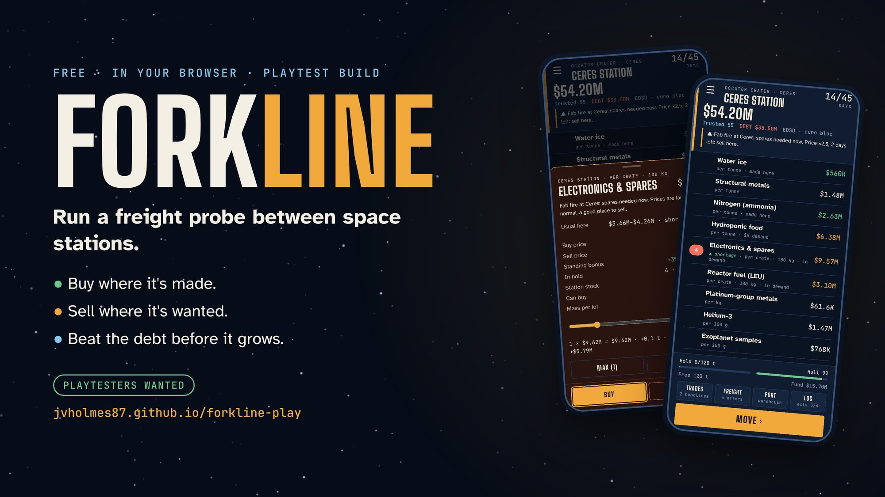

Jason Von Holmes
I design AI-assisted operating systems for small federal contractors, cutting rework, compliance misses and manual admin. I ship small products to prove the method in public.
- Discipline
- Systems engineering
- Base
- Pyeongtaek, South Korea
- Background
- USAF civil engineering, 14 years: GIS, as-built records, drone inspection program
- Studying
- MS Information Technology, Systems Engineering concentration (UMGC)
- Degree
- BS Computer Science, UMGC, 2026
- Last revised
- October 28, 2026
Shipped
Live products with the evidence behind them: what changed, how it was tested and what players said.

Forkline
A free, turn-based space trading sim for phone and PC. Buy where goods are made, sell where they're wanted, and pay off a loan before the interest grows. Built to an E for Everyone standard to teach science, economics and entrepreneurship.
Every change is tested against seeded bot missions before it ships, and every tester report is traced to a fix. Next: Google Play and a web version with one login.
In the queue
Projects underway but not near shipping. Status is honest: nothing here is claimed as built until it is.
| Project | What it is | Status |
|---|---|---|
| VIRT Command | A virtual command environment for phone and PC: a 3D nearby-star atlas and operational consoles. A test bed for interfaces I want to apply to engineering projects and autonomous-system management.Three.js, HYG star catalog, automated test suite | In development |
| PISO-AID Bob 1 | A small uncrewed surface vehicle for supervised-autonomy research, the first step toward low-cost, shallow-draft cargo barges. Full-scale vessels are envisioned as crewed.Design archive and drawings complete; no prototype built or water-tested yet | Design |
| Contract opportunity tracker | Pulls opportunities from the SAM.gov and Grants.gov APIs and filters them for small contractors, so the few worth bidding surface without a daily manual search.Architecture planned | Planned |
Research
Published repositories behind my graduate work.
- Federal Submittal Compliance Model
Requirements traceability, lifecycle-state modeling and acquisition-interface latency in federal construction compliance.
- ORB Readiness Research
Supplier readiness and qualification burden for aerospace and advanced-manufacturing supply chains.
How I work
I spent 14 years in USAF civil engineering, managing geospatial records, as-built drawings and a drone inspection program. Now I do quality control and project coordination on federal construction work in South Korea, and study systems engineering.
I build with AI-assisted coding. I set the requirements, make and log the decisions, run the tests and playtests, and approve every release. The AI implements under that control. Forkline is the public proof of that method.